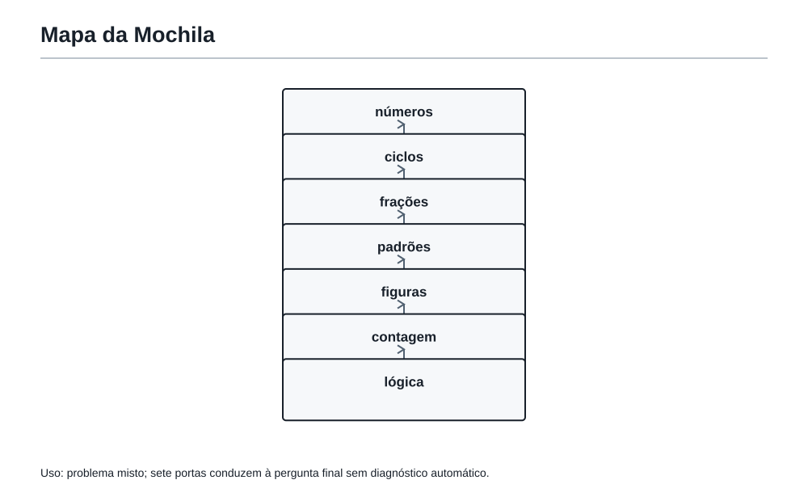
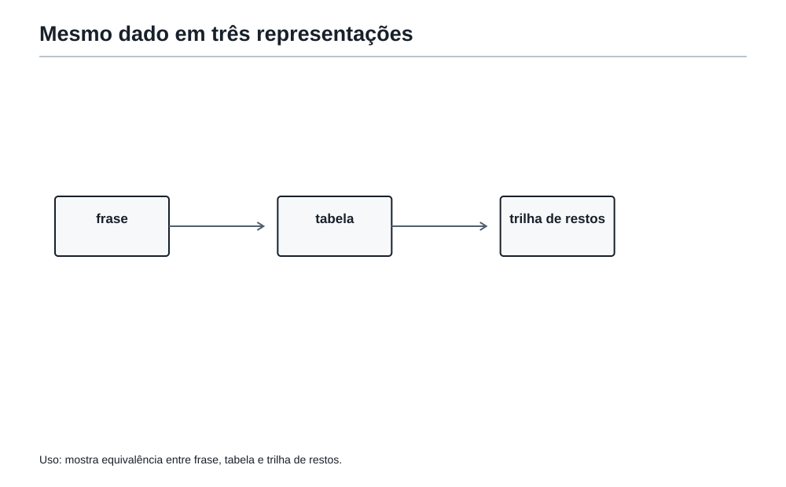
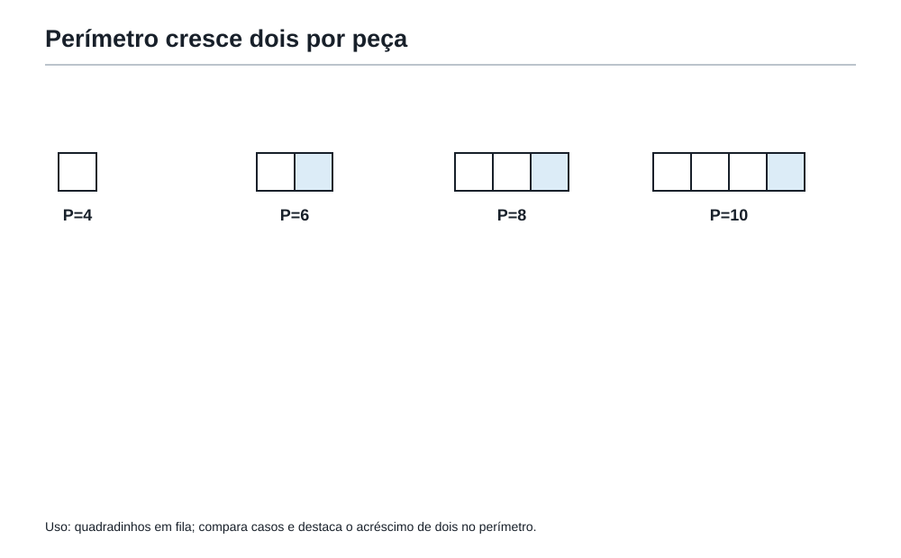
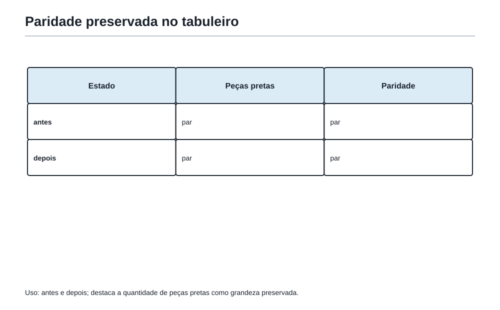
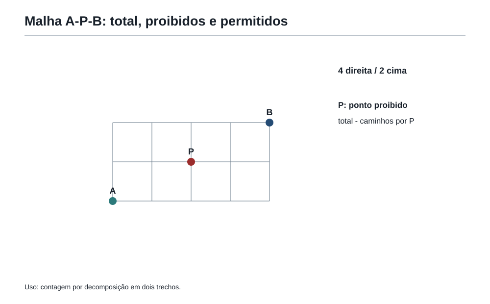
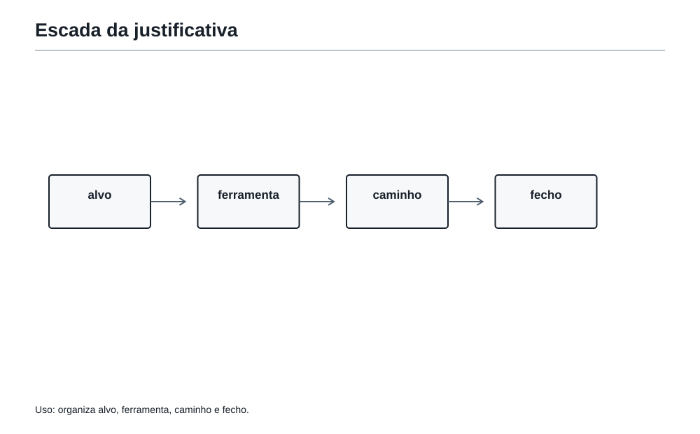

A primeira jogada
1. Muitas portas, uma primeira escolha
No capítulo anterior, Felipe aprendeu que uma pista pode eliminar uma possibilidade. Mas os problemas olímpicos nem sempre chegam organizados em uma única família. Às vezes aparecem números, figuras, palavras-sinal, caminhos e uma pergunta final no mesmo enunciado.
Isso pode dar a impressão de que é preciso usar toda a Mochila do Matemático de uma vez.
Não é.
Um problema misto não é uma bagunça de conteúdos. É uma situação em que precisamos descobrir qual ideia abre a primeira porta.
O Professor da Academia colocou sobre a mesa uma chave, uma régua, uma tabela vazia, um relógio e um pequeno desenho em malha.
— Qual deles resolve o próximo problema? — perguntou.
Felipe ficou em silêncio.
— A resposta não está no objeto mais bonito — continuou o Professor. — Está na pergunta final.
Essa é a primeira lição desta sala:
Antes da primeira conta, escolha a primeira pergunta.
2. Problema misto não é problema sem família
Leia este enunciado:
Em uma malha, um robô sai de A e chega a B andando apenas para a direita ou para cima. Ele deve passar por P. Quantos caminhos são possíveis?
Há uma figura, talvez números e até um obstáculo. Mas a pergunta não pede área nem perímetro. Ela pede uma quantidade de caminhos.
A família principal é a da contagem.
Agora compare:
Um robô começa no ponto A e, a cada 4 minutos, troca de direção. Em que direção estará depois de 37 minutos?
Aqui o desenho pode ajudar, mas a ideia principal é um ciclo: precisamos olhar o resto da divisão de 37 por 4.
Uma figura não transforma automaticamente um problema em geometria. Um número grande não transforma automaticamente um problema em conta longa. As pistas do enunciado devem ser lidas junto com o que a pergunta realmente quer.
Pergunte primeiro: o que preciso descobrir? Só depois decida qual ferramenta aproxima essa resposta.
3. O mapa das famílias
As ferramentas da Mochila não são gavetas fechadas. Uma mesma situação pode conversar com mais de uma família. Mesmo assim, reconhecer a porta principal economiza muito esforço.
| Quando a pergunta fala de... | Primeira família para investigar |
|---|---|
| divisão sem sobra, pedaços iguais | divisores e MDC |
| reencontro de ritmos, voltas, ciclos | múltiplos, MMC e restos |
| parte de um todo, comparação de receitas | frações e proporções |
| posição, crescimento, próxima figura | sequências e padrões |
| borda, espaço ocupado, recorte | perímetro e área |
| quantas maneiras, escolhas, rotas | contagem e combinatória |
| pistas, verdade, ordem, impossível | lógica e eliminação |
Esse mapa não dá uma resposta automática. Ele só indica uma primeira porta para testar.
Em uma prova, uma pergunta pode conter a palavra “quantos” e ainda pedir geometria. Por exemplo, “quantos quadradinhos cabem em uma faixa?” pode ser uma pergunta sobre área. Por isso, a palavra isolada nunca manda sozinha. O conjunto da situação decide.
Use a pergunta final, as restrições e os objetos do enunciado para escolher uma família provável. Depois confirme com um caso pequeno.

4. A pergunta escondida, agora mais forte
Desde o começo do livro, a Academia pergunta: “O que o problema quer de verdade?” Agora essa pergunta fica mais estratégica.
Considere:
Uma sala retangular mede 8 m por 5 m. Serão usadas placas quadradas de 1 m de lado. Cada caixa traz 6 placas. Quantas caixas inteiras precisam ser compradas para cobrir o chão?
Há medidas, quadrados, multiplicação e divisão. Mas a pergunta não é “qual é a área?”. A área é uma etapa.
O caminho pode ser:
- área do chão:
8 × 5 = 40 m²; - cada placa cobre
1 m², então são necessárias 40 placas; - cada caixa tem 6 placas;
40 ÷ 6não é inteiro: 6 caixas dão apenas 36 placas;- é preciso comprar 7 caixas.
A pergunta escondida era: “quantos grupos completos são necessários para alcançar ou ultrapassar uma quantidade?”.
Isso mostra outra regra importante: uma conta correta no meio não é necessariamente a resposta final.
Retomada da Ferramenta da Mochila 10 — Descobrir a pergunta escondida
Circule mentalmente a grandeza pedida: número, posição, figura, possibilidade, justificativa ou quantidade mínima. Verifique se cada etapa aproxima essa resposta.
5. Dados úteis, perigosos e decorativos
Um bom problema pode trazer informações de três tipos.
- Úteis: entram diretamente na solução.
- Perigosos: parecem úteis, mas precisam de interpretação cuidadosa.
- Decorativos: criam contexto, mas não mudam a matemática.
Veja este exemplo:
Na festa da Academia, 24 estudantes serão organizados em equipes iguais. O pátio foi decorado com 7 bandeiras azuis e 5 douradas. Cada equipe deve ter o maior número possível de estudantes, sem deixar ninguém de fora, e haverá mais de uma equipe. Quantos estudantes terá cada equipe?
As bandeiras são decorativas. O detalhe “mais de uma equipe” é perigoso: ele impede responder 24, pois uma única equipe teria todos os estudantes.
O dado útil é que o tamanho da equipe deve ser um divisor de 24 menor que 24. O maior é 12.
Resposta: 12 estudantes por equipe, formando 2 equipes.
Não existe medalha por usar todos os números que aparecem no enunciado. Existe mérito em perceber o papel de cada um.
Pergunte sobre cada dado: ele restringe a resposta, explica o contexto ou pode estar escondendo uma condição importante?
6. Trocar de representação
Quando uma forma de olhar trava, trocar de representação pode destravar o problema sem mudar a matemática.
Uma frase pode virar:
- uma tabela;
- um desenho;
- uma lista organizada;
- uma sequência de restos;
- uma fração;
- uma árvore de possibilidades;
- uma figura em malha.
Por exemplo:
Uma máquina começa no número 1. A cada passo, soma 3. Depois de quantos passos ela chega ao primeiro múltiplo de 10?
Em vez de tentar uma fórmula logo de início, podemos fazer uma pequena tabela:
| Passos | Número |
|---|---|
| 0 | 1 |
| 1 | 4 |
| 2 | 7 |
| 3 | 10 |
Chegamos em 10 após 3 passos.
Agora observe algo mais profundo: os restos ao dividir por 10 são 1, 4, 7, 0. A tabela revelou um ciclo de restos e uma sequência ao mesmo tempo.
Trocar de representação não é abandonar uma ideia. É fazer a mesma ideia aparecer de um jeito mais enxergável.
Se a frase não anda, faça tabela. Se a tabela fica grande, desenhe. Se o desenho esconde a regra, teste números pequenos ou restos.

7. Casos pequenos: o laboratório da estrutura

Casos pequenos não servem para chutar uma regra. Servem para enxergar uma estrutura que depois será justificada.
Considere a pergunta:
Em uma fileira de quadradinhos, cada novo quadradinho encosta em um lado do anterior. Como cresce o perímetro da figura?
Uma figura com 1 quadradinho tem perímetro 4. Com 2 quadradinhos grudados, o perímetro é 6, não 8, porque o lado em comum deixa de aparecer por fora. Com 3, o perímetro é 8.
| Quadradinhos | Perímetro |
|---|---|
| 1 | 4 |
| 2 | 6 |
| 3 | 8 |
| 4 | 10 |
O padrão sugere que cada novo quadradinho acrescenta 2 ao perímetro. Mas a justificativa é visual: ele cria 3 lados externos e esconde 1 lado que antes era externo. Variação total: +3 - 1 = +2.
Casos pequenos mostraram a regra; a explicação mostrou por que ela vale.
Escolha casos que sejam pequenos o bastante para controlar e variados o bastante para revelar uma regularidade. Depois explique a regularidade.
8. Quando o fim ajuda mais que o começo
Alguns problemas contam como uma situação termina. Neles, trabalhar de trás para frente é mais natural que avançar às cegas.
Um número é transformado assim: primeiro soma-se 5; depois dobra-se o resultado; por fim subtrai-se 4. O resultado final é 30. Qual era o número inicial?
Se começarmos pelo início, não sabemos qual número testar. Pelo fim, desfazemos as operações na ordem inversa:
- antes de subtrair 4, havia
30 + 4 = 34; - antes de dobrar, havia
34 ÷ 2 = 17; - antes de somar 5, havia
17 - 5 = 12.
Verificação: (12 + 5) × 2 - 4 = 30.
Trabalhar de trás para frente também é útil em percursos, jogos, números construídos por etapas e problemas que dizem exatamente onde se quer chegar.
Quando o final é conhecido e cada passo pode ser desfeito, inverta as operações ou as decisões, uma de cada vez.
9. Procurar o que não muda
Um invariante é uma característica que permanece a mesma, mesmo quando a situação muda de aparência.
Considere um tabuleiro em que, a cada jogada, uma pessoa vira exatamente duas peças. A quantidade de peças pretas pode aumentar, diminuir ou ficar igual. Mas sua paridade não muda: a quantidade de pretas varia em -2, 0 ou +2.
Se o tabuleiro começa com um número ímpar de peças pretas, ele nunca poderá terminar com um número par de peças pretas.
Essa conclusão pode resolver uma pergunta sem que seja necessário simular todas as jogadas.
Invariantes comuns em problemas do nosso nível:
- paridade: par ou ímpar;
- resto numa divisão;
- soma total;
- quantidade de cores ou tipos, quando uma regra conserva essa quantidade;
- área total, quando figuras são apenas recortadas e reorganizadas.
Depois de entender uma regra de transformação, pergunte: o que ela não consegue alterar? Paridade, resto, soma, área ou número de peças podem ser a chave.

10. Um problema completo — O número do armário
O número de um armário da Academia está entre 30 e 60. Ele deixa resto 2 quando dividido por 5, é divisível por 3 e é par. Qual é esse número?
Primeira jogada
Não precisamos listar todos os números de 31 a 59. A pergunta pede um número que passa por filtros. A família principal é números e restos.
Começamos pelos múltiplos de 3 pares, isto é, múltiplos de 6 entre 30 e 60:
36, 42, 48, 54.
Agora testamos o resto por 5:
36deixa resto 1;42deixa resto 2;48deixa resto 3;54deixa resto 4.
Resposta: o número é
42.
Por que isso basta? Porque a lista inicial já contém todos os números pares divisíveis por 3 no intervalo, e apenas 42 passa pelo último filtro.
11. Um problema completo — A rota que não pode passar por P

Em uma malha, para ir de A até B são necessários 3 passos para a direita e 2 para cima. Quantos caminhos mais curtos existem que não passam pelo ponto P, situado a 1 passo para a direita e 1 passo para cima de A?
Primeira jogada
O desenho é importante, mas a pergunta pede quantos caminhos. Vamos transformar cada rota numa sequência de 3 letras D e 2 letras C, onde D significa direita e C significa cima.
O número total de sequências é o número de maneiras de escolher as 2 posições das letras C entre 5 posições:
C(5,2) = 10.
Agora contamos os caminhos proibidos, os que passam por P.
De A até P, há 1 passo D e 1 passo C: existem 2 caminhos.
De P até B, faltam 2 passos D e 1 passo C: existem 3 caminhos.
Logo, passam por P:
2 × 3 = 6 caminhos.
Portanto:
10 - 6 = 4.
Resposta: existem 4 caminhos mais curtos que não passam por P.
O problema misturou geometria em malha e contagem, mas a primeira porta foi contar sequências de passos.
12. Um problema completo — Pistas demais não significam resposta demais
Três estudantes, Lia, Mauro e Nara, receberam uma medalha de ouro, uma de prata e uma de bronze, sem repetição. Sabe-se que:
- Lia não recebeu ouro.
- Mauro recebeu medalha de valor maior que Nara.
- Nara não recebeu bronze.
Quem recebeu cada medalha?
Primeira jogada
Há três pessoas, três posições e pistas de comparação. A porta principal é lógica com uma tabela de possibilidades.
Mauro não pode receber bronze, pois precisaria ter uma medalha maior que a de Nara. Se Mauro recebesse prata, Nara teria de receber bronze, mas a terceira pista proíbe isso.
Logo, Mauro recebeu ouro.
Nara não recebe bronze nem ouro; portanto recebe prata. Lia fica com bronze.
| Estudante | Medalha |
|---|---|
| Lia | Bronze |
| Mauro | Ouro |
| Nara | Prata |
Resposta: Mauro recebeu ouro, Nara prata e Lia bronze.
Aqui a primeira jogada não foi calcular. Foi organizar e eliminar.
13. Um problema completo — A área que virou fração
Um retângulo de 12 cm por 8 cm tem uma região pintada formada por dois triângulos iguais. Juntos, os dois triângulos ocupam
3/4da área do retângulo. Qual é a área não pintada?
Primeira jogada
A figura chama atenção, mas a pergunta fala de parte de uma área conhecida. A porta principal é área seguida de fração.
Área total:
12 × 8 = 96 cm².
Área pintada:
3/4 de 96 = 72 cm².
Área não pintada:
96 - 72 = 24 cm².
Resposta:
24 cm².
A conta é curta porque a primeira escolha foi correta: não era preciso descobrir os lados dos triângulos, apenas usar a fração da área total que o enunciado já entregou.
14. Um problema completo — O jogo das trocas
Em uma mesa há 15 moedas com a face cara para cima. Em cada jogada, Felipe deve virar exatamente 2 moedas. É possível terminar com todas as moedas mostrando coroa?
Primeira jogada
Testar sequências de jogadas seria cansativo. A regra fala em virar 2 moedas por vez, então a paridade merece atenção.
No início, há 15 caras: quantidade ímpar.
Ao virar 2 moedas, a quantidade de caras pode mudar em:
-2, se duas caras viram coroa;0, se uma cara e uma coroa trocam;+2, se duas coroas viram cara.
Em todos os casos, a paridade da quantidade de caras continua ímpar.
Terminar com todas em coroa significaria ter 0 caras, uma quantidade par. Isso é impossível.
Resposta: não é possível.
Esse tipo de resposta exige uma justificativa, não apenas “não consegui encontrar uma sequência”. O invariante prova que nenhuma sequência pode funcionar.
Ver solução
15. Escrever a solução também é resolver

Encontrar uma ideia é metade do trabalho. Na Segunda Fase, a solução precisa deixar claro para outra pessoa o que foi pensado e por que isso resolve o problema.
Uma resposta forte costuma ter quatro degraus:
- Alvo: diga o que será encontrado ou provado.
- Ferramenta: apresente a observação, a tabela, o desenho ou a conta decisiva.
- Caminho: mostre as etapas na ordem necessária.
- Fecho: escreva a resposta com unidade e justificativa suficiente.
Compare:
“42.”
com:
“Os números pares divisíveis por 3 entre 30 e 60 são 36, 42, 48 e 54. Entre eles, apenas 42 deixa resto 2 na divisão por 5. Portanto, o número do armário é 42.”
A segunda versão permite conferir a ideia inteira. Ela não depende de uma conta escondida.
Antes de encerrar, pergunte:
Minha explicação mostra por que não esqueci nenhum caso e por que a resposta realmente atende à pergunta?
Oficina16. Oficina Olímpica 10 — Escolher a primeira jogada
Todos os desafios desta Oficina são problemas originais em estilo OBMEP e têm resposta determinada. As respostas comentadas abaixo explicam uma rota possível, sem transformar a rota em receita única.
Desafio 1 — A primeira porta
Um número deixa resto 1 na divisão por 4 e resto 2 na divisão por 3. Ele está entre 10 e 20. Qual é o número?
Resposta comentada: os números entre 10 e 20 que deixam resto 1 por 4 são 13 e 17. Entre eles, 17 deixa resto 2 na divisão por 3. A primeira porta é a dos restos e filtros.
Resposta:
17.
Desafio 2 — Um caso pequeno revela
Uma fileira tem n quadradinhos grudados lado a lado. Qual é o perímetro quando n = 6?
Resposta comentada: com 1 quadradinho, o perímetro é 4. Cada novo quadradinho acrescenta 2 lados externos. Para 6 quadradinhos: 4 + 5 × 2 = 14.
Resposta: 14 lados de unidade.
Desafio 3 — De trás para frente
Uma máquina multiplica um número por 3 e depois soma 7. O resultado é 34. Qual era o número inicial?
Resposta comentada: desfazemos: 34 - 7 = 27; 27 ÷ 3 = 9.
Resposta:
9.
Desafio 4 — A rota proibida
Para ir de A até B em uma malha, são necessários 2 passos para a direita e 2 para cima. Há 6 caminhos mais curtos no total. Se um ponto P está a 1 passo para a direita e 1 para cima de A, quantos caminhos passam por P?
Resposta comentada: de A até P há 2 caminhos. De P até B também há 2 caminhos. Portanto, passam por P 2 × 2 = 4 caminhos.
Resposta: 4 caminhos.
Desafio 5 — O que não muda
Uma sequência começa com 9 fichas vermelhas. Em cada jogada, duas fichas têm suas cores invertidas: vermelha vira azul e azul vira vermelha. É possível terminar com exatamente 4 fichas vermelhas?
Resposta comentada: a quantidade de fichas vermelhas muda em 0 ou 2 a cada jogada. Ela começa ímpar e permanece ímpar. Como 4 é par, não é possível.
Resposta: não.
17. As ferramentas da Mochila nesta sala
Nesta sala, a Mochila ganhou ferramentas para unir as outras ferramentas:
- Escolher a primeira jogada antes da primeira conta.
- Identificar a família do problema.
- Separar dados úteis, perigosos e decorativos.
- Trocar de representação.
- Fazer casos pequenos para enxergar estrutura.
- Trabalhar de trás para frente.
- Procurar invariantes: aquilo que não muda.
- Dividir um problema misto em etapas.
- Perguntar “por que isso basta?”.
- Escrever a solução em passos claros.
Quando um enunciado parecer cheio de portas, não tente abri-las todas. Comece com estas perguntas:
- O que a pergunta final pede?
- Qual família parece mais próxima?
- Qual representação deixa as pistas visíveis?
- O que preciso provar para dizer que a resposta basta?
18. Figuras aplicadas no ponto de uso
Mapa, representações, casos pequenos, invariante, malha e escada de escrita foram especificados nas seções em que dirigem uma primeira jogada ou uma justificativa. Não se repetem como galeria final.
19. Pergunta para amanhã
Felipe já tem ferramentas e já sabe escolher uma primeira porta. Agora falta aprender a usar essa escolha dentro de uma prova inteira: reconhecer o terreno, decidir por onde começar, escrever com clareza e revisar antes de entregar.
Como treinar uma prova inteira sem se perder no tempo, na escrita e na escolha das soluções?
No próximo capítulo, a Academia entra na sala dos simulados e da estratégia de prova.